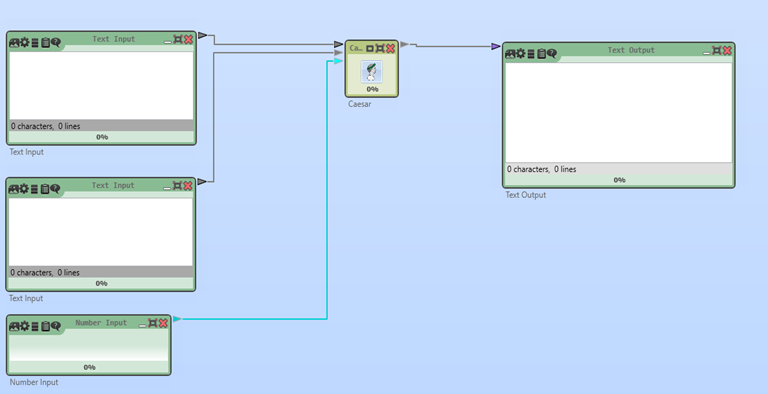
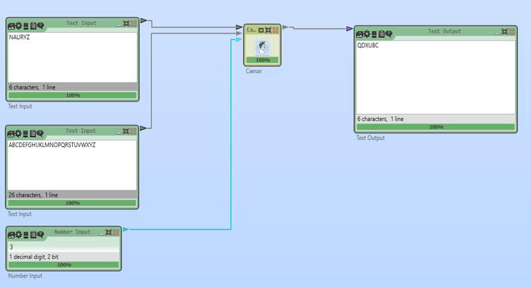

ЦЕЗАРЬ ШИФРЫ
Cryptool 2 (CT2) — криптографиялық әдістерді зерттеу мен оқытуға арналған бағдарламалық орта. Бұл нұсқаулықта біз Цезарь шифрын пайдаланып, мәтінді шифрлау процесін қарастырамыз.
1. Жаңа жобаны бастау
Home → Жаңа (New) таңдаңыз. Жаңа жұмыс кеңістігі (Workspace) ашылады.
Қажетті блоктарды жобаға қосамыз:
- Text Input (2 дана, біреуі шифрланатын мәтін, екіншісі алфавит)
- Text Output (Шифрланған мәтінді алу)
- Number Input (Кілтті енгізу үшін)
- Ceasar (Цезарь шифрлау блогы)
Text Input (Мәтін енгізу)
Мақсаты: Қолданушы енгізетін бастапқы мәтінді немесе қосымша мәліметтерді сақтау.
Сипаттамасы:
- Бірінші Text Input блогы — шифрланатын ашық мәтінді енгізу үшін қолданылады.
- Екінші Text Input блогы — қолданылатын алфавитті (мысалы, "ABCDEFGHIJKLMNOPQRSTUVWXYZ") сақтау үшін қолданылады.
- Бұл блоктар шифрлау процесіне қажетті ақпарат береді.
Number Input (Сан енгізу)
Мақсаты: Цезарь шифрлау алгоритмінде кілт (Shift мәні) ретінде қолданылатын санды енгізу.
Сипаттамасы:
- Number Input арқылы пайдаланушы әріптердің жылжу санын (Shift) енгізеді.
- Бұл мән Caesar Cipher блогына беріледі, ол осы сандағы әріп жылжуын орындайды.
- Shift мәні оң болса, әріптер оңға жылжиды.
- Shift мәні теріс болса, әріптер солға жылжиды.
Caesar (Цезарь шифрлау блогы)
Мақсаты: Цезарь шифры бойынша мәтінді шифрлау немесе дешифрлау.
Сипаттамасы:
- Бұл блок Text Input (мәтін), Number Input (кілт) және Text Input (алфавит) мәндерін қабылдайды.
- Шифрлау режимі — енгізілген мәтіндегі әріптерді анықталған кілтке (Shift) байланысты жылжыту.
- Дешифрлау режимі — шифрланған мәтіндегі әріптерді кері бағытта жылжытып, бастапқы мәтінді қалпына келтіру.
- Алфавит енгізу арқылы қандай символдар жиынтығы қолданылатынын басқаруға болады.
Text Output (Мәтін шығару)
Мақсаты: Шифрланған немесе дешифрланған мәтінді көрсету.
Сипаттамасы:
- Бұл блок Caesar Cipher блогының нәтижесін көрсетеді.
- Егер шифрлау жасалса, онда шифрланған мәтін шығады.
- Егер дешифрлау жасалса, онда бастапқы ашық мәтін шығады.
- Бұл блок арқылы шифрлау нәтижесін тексеруге болады.
2. Блоктарды суреттегідей байланыстыру

3. Мәндерді енгізіп нәтижені көру
"Play" (▶) түймесін басып, шифрлау нәтижесін қараңыз.

Nauryz сөзін 3 қадамға жылжытып, QDXUCB шифрланған мәтінін алдық.
Қорытынды
- Осылайша, Cryptool 2 көмегімен Цезарь шифрын оңай шифрлауға болады.
- Бұл әдіс негізгі криптографиялық түсініктерді оқыту үшін өте ыңғайлы.
ПРАКТИКАЛЫҚ ТАПСЫРМА
1-тапсырма: Шифрлау
Өз есіміңізді Цезарь шифрын қолданып шифрлаңыз.
2-тапсырма: Дешифрлау
Мысалдағы "QDXUCB" шифрланған мәтінін дешифрлаңыз.
3-тапсырма: Шифрлау
Қазақша алфавит құрып, "ҚАУІПСІЗДІК" сөзін шифрлаңыз.